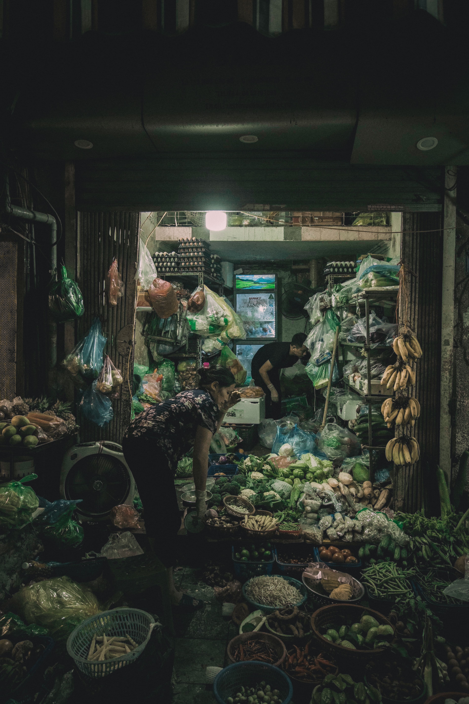
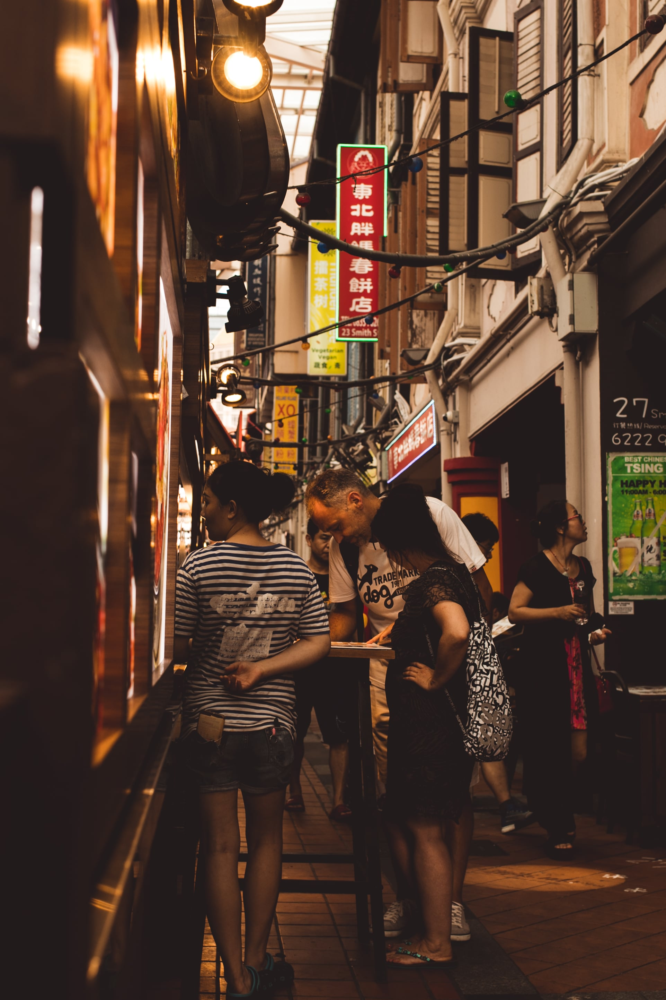

The ocean trash cleanup device is aimed at removing buoyant & surface trash. It works by using
a pressure gradient generated by a 9V water pump. This helps pull less dense objects into a
bin, for future disposal. It works as a stationary bin attached to harbours and piers or if possible,
can be used as attachments on boats.
This is a prototype built with recyclable materials.
Features:
Current drawing pump which pulls buoyant trash into the bin
Rotatable lid which allow for the opening and closing of the bin
LED screen displaying the status of the bin (Operational/Full)
Manual Control with two buttons
Button A: lid close
Button B: lid open
Bluetooth activated control with smartphone
MakeCode Project:
Parts:
Micro:bit V1
Grove Servo Motor
Grove Water Pump
Grove Relay
Micro:bit Breakout Board
Demostration:
Automated Lights and Attendance IoT System
Ever used Google Home to turn on the lights? Well... what if we made our own?
Introducing, the automated lights and attendance system! This IoT device detects entry and exit
through PIR sensors, logging the data onto the ThingSpeak IoT platform. A telegram message will thus be sent
to the user through IFTTT indicating whether a person has entered or left the room, and the total number of people in the room.
Features:
Automated lights
Automatically turn on when people enter the room
Attendance system
Able to record the number of people in the room at a specific time!
Able to record the number of people in the room at a specific time!
Can view the number of people in the room in real time!
Notifications when someone enters/leaves the room
Parts:
Octopus 5mm LED brick OBLED
2x AM412 PIR sensor*
Micro:bit V1*
IoT:bit breakout board*
OLED display*
*These parts can be found in the ELECFREAKS Micro:bit Smart Science IoT Kit.
MakeCode Project:
Demostration:
IoT Noise Monitoring Device
As a teacher, one would have to deal with high noise levels from noisy classes, and it can get tiring having to deal with such situations. Now, what if we had
a device do it for you? Thats where the IoT Noise Monitoring Device comes into play!
With this device, one can easily control noise levels in the classroom, with the alarm that rings when the noise level is too high. Real-time monitoring is also
available, with the data logged onto the ThingSpeak IoT platform and the current noise level displayed on the OLED screen. Telegram messages are also sent to the user when the noise level exceeds the threshold through the
usage of the IFTTT platform.
Features:
Monitor the noise levels in real time on ThingSpeak
Have an automatic melody played when it gets too noisy
Receive Telegram messages when it gets too noisy, in case you are ever away from the classroom
Parts:
Microbit V1
ELECFREAKS microbit Breakout Board
Noise Sensor*
OLED Display*
*These parts can be found in the ELECFREAKS Micro:bit Smart Science IoT Kit.
MakeCode Project:
Demostration:
PERSONAL WEBSITE
STREET


LANDSCAPE
TRAVEL
ARCHITECTURE
EVENTS
INTERNSHIPS
TinkerTanker Internship 2020
From 8 November 2020 - 27 November 2020, I had the opportunity to participate in a work attachment at TinkerTanker.
This was an opportunity I was very grateful for, and my time there proved to be invaluable.
Before joining TinkerTanker, I had virtually no experience with programming. All I had was a micro:bit project,
and some experience with scratch and LEGO mindstorm from my primary school days. Well, you could say that was good too, as it meant I could maximise my time there to learn as much as I can.
As Confucius once said, "If you are the smartest person in the room, you are in the wrong room". I'd rather be the idiot in the room!
One of the most valuable things I picked up there, was obviously the technical stuff. Being someone who only just started coding, I had a lot of room for learning.
From documenting projects, such as the ELECFREAKS Smart CuteBot, Smart Science Iot Kit, and the Arduino MKR1000, I was able to familiarise myself with the logic of programming,
and improve my problem-solving and creativiy skills. From thinking of solutions to modern day problems, it allowed me to innovate and come up with devices such as the
Automated Lights and Attendance IoT System and the IoT noise monitoring device. From playing around with the MKR1000, it introduced me to the world of
text-based programming and APIs, as I tried to connect to an open-source API called Jikan API, and print out specific animes onto the serial monitor.
I learnt much about Computer Science, learning things like HTTP requests, Protocols, Webhooks, and other basics through such projects. I learnt how to use platforms such as
ThingSpeak and IFTTT for IoT projects. I learnt much about the hardware side of things, and how to use the different components.
However, most importantly, I learnt what programming was for me. To me, programming was about messing about, and making cool and useful things. It was only because I wanted to
print random anime pictures and stats onto the serial monitor, where I started to learn how to work with APIs and the MKR1000.
It was about looking at the problems in our world, and what we can do to help solve it. I was thinking about how teachers may have it hard
controlling the noise levels in the class, and decided to make the IoT noise monitoring device. This was what I felt, was the biggest takeaway I had from this internship, on the technical side of things.
A big part of the experience was the office experience too. Being my first time working at a office, the experience was eye-opening. The environment there was very chill and family-like, and made me realise how important office environment is for the productivity of a company.
I realised that with a good office environment, working can be something to look forward to! Not only that, I learnt of the different company practices in Tinkertanker. I found some quite cool and interesting, such as weekly stand ups and stand downs
that not only helped with tracking the productivity of the employees and interns, but also provided an avenue for communication, interaction and feedback within the company. Being part of the committee for Digigirlz 2020 gave me the chance to see how a company runs such major events,
even though I only played the role of a technical support member and helped out with the judging process for the competition. All these were valuable things I took away from my experience there, even if it wasnt directly related to programming.
Overall, I am extremely grateful to have had the chance to participate in an internship at Thinkertanker. Being there not only allowed me to learn about programming through documenting projects,
it also allowed me to learn and experience things I would never had the chance to in my daily life as a student, had I not gone for this internship. :)